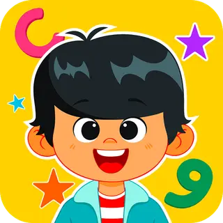

SK
SCORE 0000
BEST 0000 x1
CLASS UNITY DEV
XP 5+ YRS
Available for hire · Full-time & Freelance · Pune / Remote
Sachin Korde
Unity 3D Developer_
Unity game developer in Pune, India. I build 2D & 3D mobile games, AR/VR apps and real-time multiplayer games with Unity and C#.
SHIPPED ON GOOGLE PLAY
01 // PLAYER PROFILE
Who's playing?
INVENTORY / SKILLS
02 // LEVEL SELECT
Projects & games
Pick a company to filter. Scroll sideways or use the arrows.


03 // ARCADE
Take a break. Play a game.
10 small games I coded for this site: platformer, puzzles, reflex and more. Your best scores are saved in your browser.
TOTAL HIGH SCORE0
04 // QUEST LOG
Career journey
Every company is a level cleared. Tap one to open it.
05 // DEV LOG
All case studies →
Case studies
The story behind each project: what I built, the problems I solved and what I learned.

Neela Mediatech / Neela Films Case Study: Building TMKOC Playschool, a Kids Learning App in Unity How I built the TMKOC Playschool kids learning app from scratch in Unity: registration and OTP login, student dashboard, REST APIs, Addressables content downloads, localization and learning mini-games. 2 min read → Neela Mediatech / Neela Films
Optimizing TMKOC Mobile Games in Unity: Run Jetha Run, Match & Merge and Hungry Goli
How I removed lag, smoothed animations and updated 3D models in official TMKOC mobile games built with Unity: Run Jetha Run, Match & Merge: TMKOC Puzzle and Hungry Goli.
2 min read →
Neela Mediatech / Neela Films
Optimizing TMKOC Mobile Games in Unity: Run Jetha Run, Match & Merge and Hungry Goli
How I removed lag, smoothed animations and updated 3D models in official TMKOC mobile games built with Unity: Run Jetha Run, Match & Merge: TMKOC Puzzle and Hungry Goli.
2 min read →
 Kiddopia (Paper Boat Apps)
Building Kids Games for Kiddopia: K-Man Flying, PathPuzzle and More (Unity 2D + Spine)
How I built K-Man Flying from scratch with Spine animations, added PathPuzzle to Kiddopia's Puzzles section, and created learning games for toddlers in Unity 2D.
2 min read →
Aquila Digital Energy Solutions
Unity Beyond Games: 3D Digital Twins for Oil & Gas Pressure Testing (DPT)
How I built exact 3D replicas of BOP stacks, choke manifolds and MPD equipment in Unity and Blender for Aquila's Digital Pressure Testing platform, tested against real-time pressure data.
2 min read →
Kiddopia (Paper Boat Apps)
Building Kids Games for Kiddopia: K-Man Flying, PathPuzzle and More (Unity 2D + Spine)
How I built K-Man Flying from scratch with Spine animations, added PathPuzzle to Kiddopia's Puzzles section, and created learning games for toddlers in Unity 2D.
2 min read →
Aquila Digital Energy Solutions
Unity Beyond Games: 3D Digital Twins for Oil & Gas Pressure Testing (DPT)
How I built exact 3D replicas of BOP stacks, choke manifolds and MPD equipment in Unity and Blender for Aquila's Digital Pressure Testing platform, tested against real-time pressure data.
2 min read →
 ImmersiveVision Technology
Joining a Large Unity Codebase: My Work on Cadaviz, a Virtual Dissection Table
How I got up to speed on the large Cadaviz Unity codebase on my own and designed a new section for the Male Full Body module with a clean, modular class structure.
2 min read →
ImmersiveVision Technology
Joining a Large Unity Codebase: My Work on Cadaviz, a Virtual Dissection Table
How I got up to speed on the large Cadaviz Unity codebase on my own and designed a new section for the Male Full Body module with a clean, modular class structure.
2 min read →
 AppOn
Shipping a Diwali LiveOps Event in Unity: Cooking Super Star & World Of Carrom
How I built a limited-time Diwali festival event, new levels and animated UI popups for AppOn's Cooking Super Star and World Of Carrom mobile games in Unity.
2 min read →
AppOn
Shipping a Diwali LiveOps Event in Unity: Cooking Super Star & World Of Carrom
How I built a limited-time Diwali festival event, new levels and animated UI popups for AppOn's Cooking Super Star and World Of Carrom mobile games in Unity.
2 min read →
06 // PLAYER 2 — JOIN?
Hire a Unity developer
Hire a Unity developer
for your next hit game.
I'm based in Pune, Maharashtra and open to full-time roles, freelance projects and remote work. Whether you're a studio, a startup or need one game built, let's talk.
🏢Full-timeUnity / Game Developer roles in Pune or remote
🤝FreelanceMobile games, card & casino games, AR/VR apps
🌍Remote / ContractFeature work, optimization, porting & polish
Game development services in Pune → My gaming projects → Studio or freelancer? Hiring guide →